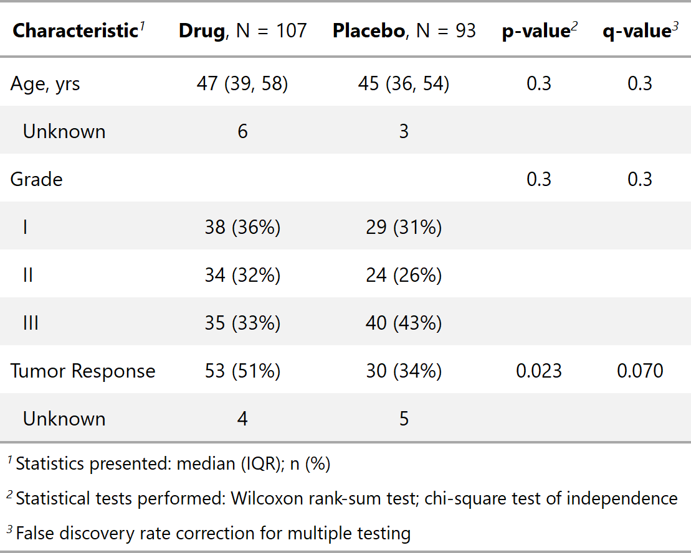

| add_q.tbl_summary {gtsummary} | R Documentation |
Adjustments to are p-values are performed with stats::p.adjust.
## S3 method for class 'tbl_summary' add_q(x, method = "fdr", pvalue_fun = x$fmt_fun$p.value, ...)
x |
|
method |
String indicating method to be used for p-value
adjustment. Methods from
stats::p.adjust are accepted. Default is |
pvalue_fun |
Function to round and format p-values.
Default is style_pvalue.
The function must have a numeric vector input (the numeric, exact p-value),
and return a string that is the rounded/formatted p-value (e.g.
|
... |
Additional arguments passed to or from other methods |
A tbl_summary object

Esther Drill, Daniel D. Sjoberg
Other tbl_summary tools:
add_n(),
add_overall(),
add_p(),
add_stat_label(),
bold_italicize_labels_levels,
bold_p.tbl_summary(),
inline_text.tbl_summary(),
modify_header(),
sort_p.tbl_summary(),
tbl_merge(),
tbl_stack(),
tbl_summary()
tbl_sum_q_ex <-
trial[c("trt", "age", "grade", "response")] %>%
tbl_summary(by = trt) %>%
add_p() %>%
add_q()